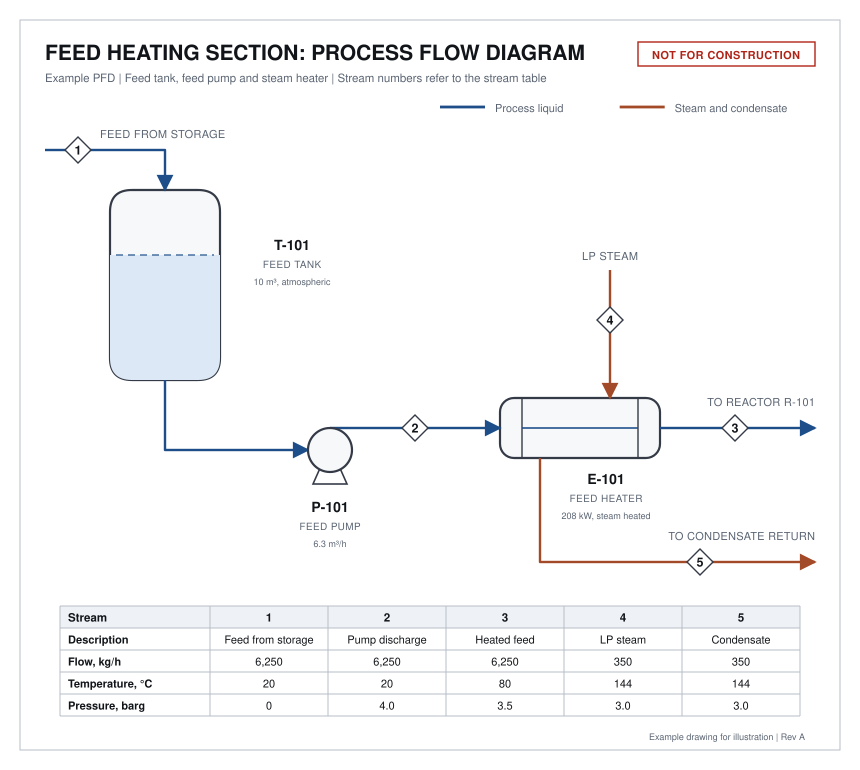

Two drawings come up in almost every review of a process plant: the process flow diagram (PFD) and the piping and instrumentation diagram (P&ID). Owners, investors and operations managers are asked to comment on both, often without having been shown how to read them.
This guide reads one small example on both drawings: a section that heats a feed liquid with steam before it enters a reactor. The same heater appears on the PFD and on the P&ID, so you can see what each drawing adds.
The two drawings in one sentence each
- A PFD shows how the process works. It has the main equipment, the main streams and their flows, temperatures and pressures.
- A P&ID shows how the plant is built and controlled. It has every pipe, valve and instrument, and the control loops that connect them.
Reading the PFD

Read a PFD in four steps.
- Follow the main flow. It normally runs left to right. Here the feed enters tank T-101, pump P-101 raises its pressure, heater E-101 warms it, and it leaves for reactor R-101.
- Identify the equipment. Each item has a tag. The letter gives the type and the number identifies the item.
- Look up each stream. The numbers in diamonds refer to columns in the stream table.
- Check that it balances. What goes into each item must come out.
Table 1. Common equipment tag letters
| Letter | Equipment | On the example |
|---|---|---|
| T or TK | Storage tank | T-101, feed tank |
| P | Pump | P-101, feed pump |
| E | Heat exchanger | E-101, feed heater |
| R | Reactor | R-101, on another sheet |
| V or D | Pressure vessel or drum | None |
| C | Column or compressor | None |
Letters vary between companies, so check the legend sheet that comes with the drawings.
Using the stream table
The stream table is where a PFD can be checked with a calculator. On the example:
- Mass. The feed is 6,250 kg/h in streams 1, 2 and 3. Nothing is added or lost. The steam in stream 4 equals the condensate in stream 5, at 350 kg/h.
- Pressure. The pump raises the feed from 0 to 4.0 barg. The heater takes 0.5 bar of that, leaving 3.5 barg to reach the reactor.
- Heat. The feed is heated from 20°C to 80°C. With a heat capacity of 2.0 kJ/kg·K, that needs 6,250 × 2.0 × 60 = 750,000 kJ/h, or 208 kW. The steam supplies 350 kg/h × 2,133 kJ/kg = 746,550 kJ/h, or 207 kW. The two agree.
If these checks fail on a real PFD, ask why before the drawing is used for anything else.
What the PFD leaves out
The PFD has no valves, no instruments and no pipe sizes. It does not show how the outlet temperature is held at 80°C or what happens if it rises. Those answers are on the P&ID.
Reading the P&ID

The heater is the same item as on the PFD. The P&ID adds everything needed to build, operate and maintain it.
Table 2. Symbols on the example P&ID
| Symbol | Tag on the example | What it is |
|---|---|---|
| Circle | PI-201, TT-101 | An instrument mounted in the field, on or near the pipe |
| Circle inside a square | TIC-101 | A function in the control system, seen on the control room screens |
| Two triangles, point to point | Not tagged | A manual valve, used here to isolate the heater |
| Two triangles with an actuator on top | TV-101 | A control valve, positioned by a signal |
| Angled valve with a spring | PSV-102 | A pressure relief valve, which opens by itself at its set pressure |
| Square with a diagonal | ST-201 | A steam trap, which lets condensate out and holds steam in |
| Solid line | DN50-P-1003 | A pipe |
| Dashed line with an arrow | None | An instrument signal, pointing to the device that receives it |
Reading an instrument tag
Instrument tags follow the ISA-5.1 standard. The first letter is what is measured. The letters after it say what the device does. The number identifies the loop.
Table 3. Instrument tag letters used on the example
| Tag | First letter | Following letters | Meaning |
|---|---|---|---|
| TT-101 | T, temperature | T, transmitter | Measures temperature and sends it to the control system |
| TIC-101 | T, temperature | I, indicator; C, controller | Displays the temperature and controls it |
| TV-101 | T, temperature | V, valve | The valve that the temperature loop moves |
| PI-201 | P, pressure | I, indicator | A pressure gauge read at the pipe |
| PSV-102 | P, pressure | S, safety; V, valve | A pressure relief valve |
Other common first letters are F for flow and L for level. Everything with the number 101 belongs to one control loop.
Tracing a control loop
A control loop has three parts: a measurement, a controller and a final element. Follow the dashed lines and their arrows.
- TT-101 measures the temperature of the feed leaving the heater.
- TIC-101 compares it with the set point of 80°C.
- TV-101 opens to admit more steam if the feed is too cold and closes if it is too hot.
The note "FC" beside the valve means fail closed. If instrument air or the signal is lost, the valve shuts and the steam stops. For a heater that is the safe direction. Every control valve should show its failure position, and each one is worth asking about in a review.
Reading a line number
Each pipe has a line number that links the drawing to the line list and the piping specification.
Table 4. The parts of line number DN50-P-1003
| Part | Meaning | Other examples on the drawing |
|---|---|---|
| DN50 | Nominal pipe size, 50 mm (2 inch) | DN40 steam, DN25 condensate |
| P | Service: process | LS, low pressure steam; C, condensate |
| 1003 | Sequence number of the line | 1004 after the heater |
The number changes from 1003 to 1004 across the heater because the fluid conditions change. Full line numbers often add a piping class and an insulation code. Formats differ between companies.
Five questions to ask in a P&ID review
You do not need to be an engineer to ask useful questions. On the example:
- Can this equipment be isolated for maintenance? Yes on the process side, with a manual valve on each side of the heater.
- What protects it from overpressure? PSV-102. If both manual valves are shut with steam on, the trapped liquid heats and expands, and the relief valve opens at 6.0 barg.
- Where does the relief go? The drawing says "to safe location". Ask where that is.
- What happens on loss of air or power? TV-101 fails closed and heating stops.
- How does the operator know something is wrong? TIC-101 shows the temperature in the control room. This drawing has no high temperature alarm, which is a fair point to raise.
Side by side
Table 5. What each drawing shows for the same heater
| Item | PFD | P&ID |
|---|---|---|
| Heater E-101 | Shown, with duty | Shown |
| Flows, temperatures, pressures | Stream table | Key values only |
| Pipe sizes and line numbers | Not shown | Every line |
| Manual valves | Not shown | Shown |
| Control loop | Not shown | TT-101, TIC-101, TV-101 |
| Relief valve and steam trap | Not shown | PSV-102, ST-201 |
The example is simplified for teaching. A real P&ID of this heater would also show drains, vents, a bypass around the control valve and insulation. For where these drawings fit in a project, see What a FEED Package Contains.
Takeaway. Use the PFD to check that the process balances, and the P&ID to check that the plant can be operated, maintained and kept safe. On both, start by following one line from end to end.
The drawings are illustrative examples and are not for construction. Symbols and tag formats vary between companies and standards.